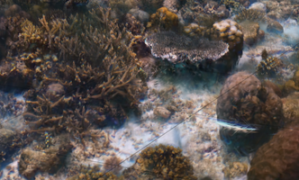

Coral Reefs, XR, and AI ongoing
Current project to render stunning photogrammetry of coral reefs and empowers scientists with spatial AI tools for restoration and awareness efforts. Uses cutting-edge gaussian splat rendering approaches combined with LLM integration and embodied interface design. Prototypes run on Apple Vision Pro, and desktop devices, demo on request. Collaborative project across the Coastal Climate Resilience Center, HCI Researchers, and Wildflow.ai.